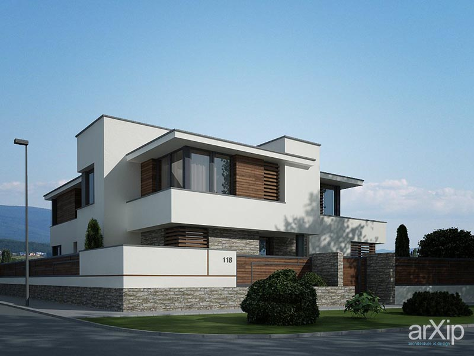
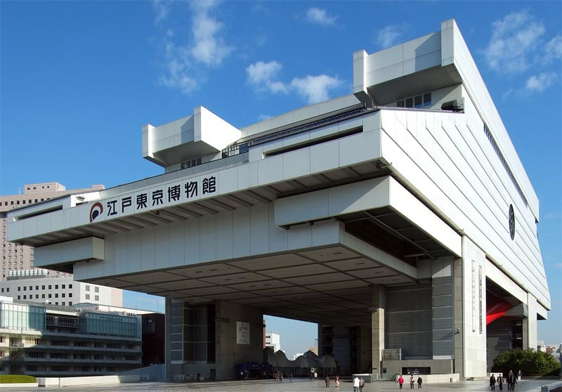
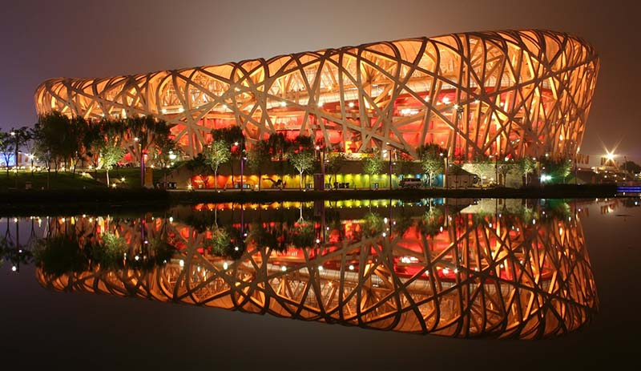

Минимализм
Зародился в 40-е г. Расцвет направления пришелся на 60-е г. ХХ в. Руководствуясь принципом«Меньше —
значит больше» Мисван дер Роэ развивает концепцию универсального дома и становится основоположником
данного направления. Особенностью стиля стало избегание декора и украшений, монохромность,
максимально простые прямые линии с минимальным изгибом, открытость, размытие границ между внутренним
пространством и окружающей средой. Предпочтение отдается таким материалам как: металл, стекло,
бетон, дерево.Если создается дом в стиле минимализм, то он функциональный, лаконичный, наполненный
светом, где все инженерные, бытовые конструкции тщательно скрыты. Минимализм получил второе дыхание
на рубеже ХХ-ХХI вв. И на сегодняшний момент крайне востребован. Это касается не только
индивидуального строительства, но и общественных сооружений. Из-за своей строгости, лаконичности и
предельной функциональности он схож с хай-теком и популярен при возведении офисных центров,
небоскребов.

Зародился в конце 50-х годов ХХ в. в Японии. Кионори Кикутаке стал главным идеологом
направления.Взор первопроходцев данного стиля был обращен, как и в случае с био-теком к природе.
Концепция метаболизма заключается в перенесении принципов индивидуального развития живого организма
в архитектуру.Мир быстро меняется, и, чтобы идти в ногу со временем, архитекторы решили этот вопрос
посредством перестройки сооружения и замену его составляющих при заданных требованиях. Признаком
такой архитектуры является ячеистость, модульность. А особенностью стала незавершенность и
недосказанность.Таким образом здания выглядят динамичными. А незаполненные пространства заставляют
акцентировать на себе внимание и весь архитектурный объект находится в диалоге с окружающим миром.

Постмодернизм
Постмодернизм представляет собой совокупность течений в архитектуре, которые пришли на смену
модернизму. Стиль поставил для себя задачу гармонизировать архитектуру в соответствии естественной и
искусственной окружающими средами. Главной составляющей постмодернизма стал упор на эстетический
облик сооружений и их оригинальность.Запрет на декоративные элементы, как это было в модерне, снят.
Практиками постмодернизма стали: Роберт Вентури, Морис Кюло, Леон Крие, Альдо Росси, Антуан Грюмбах.
Как таковой новой идеи постмодерн не несет. Стиль основан на подражании историческим памятникам и
создании архитектурных объектов, используя упрощение классические формы и их хаотичное применение.
Логика и простота отошли на последний план. Искусство как «храм культуры» отрицается и происходит
слияние изящных искусств и масс культуры. Как и в хай-теке подход к воплощению сооружению ироничный.
